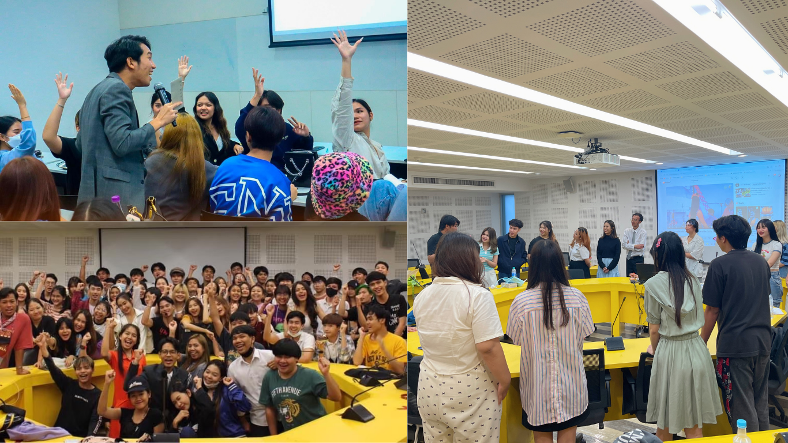
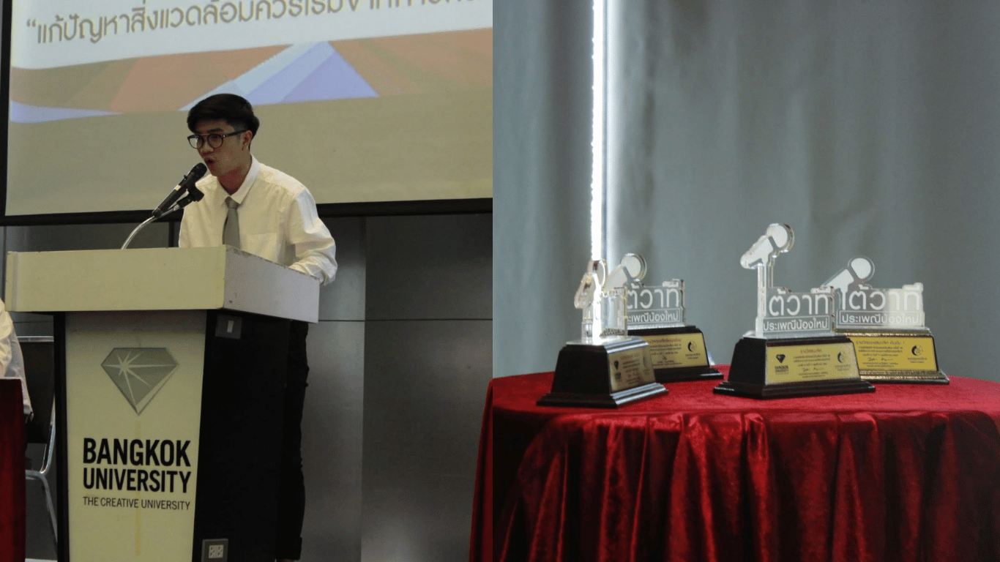
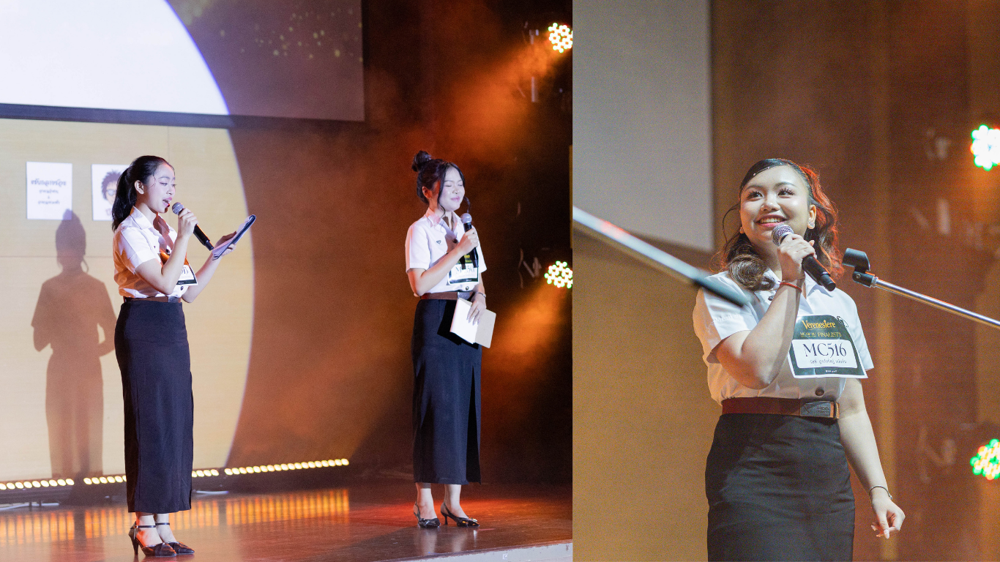
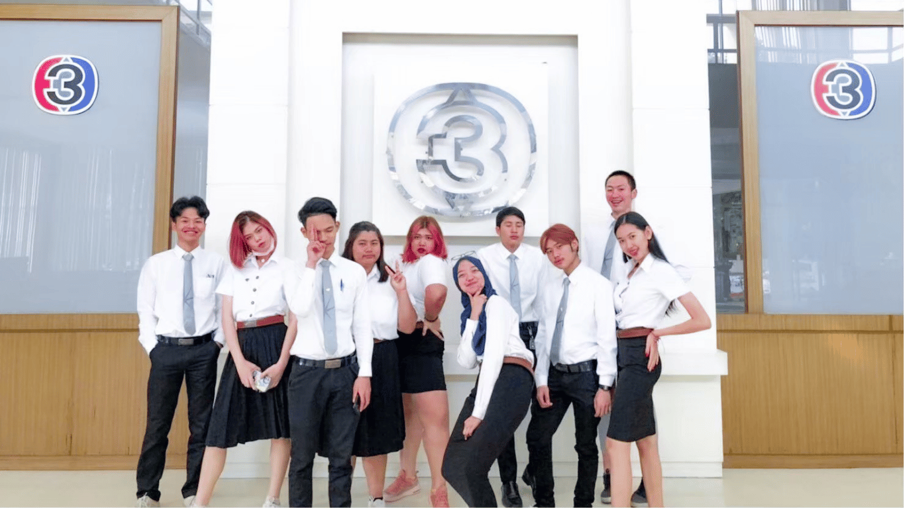

ชมรมมีกิจกรรมหลากหลายรูปแบบที่เปิดโอกาสให้นักศึกษาได้เรียนรู้ ฝึกฝน และพัฒนาทักษะการสื่อสารอย่างต่อเนื่อง กิจกรรมเหล่านี้ถูกออกแบบมาเพื่อให้สมาชิกและนักศึกษาที่สนใจได้มีพื้นที่ในการทดลอง แสดงความสามารถ และพัฒนาทักษะการสื่อสารผ่านประสบการณ์จริง ไม่ว่าจะเป็นการพูดต่อหน้าผู้คน การคิดวิเคราะห์ หรือการทำงานร่วมกับผู้อื่น เพื่อให้นักศึกษาที่สนใจได้เข้ามามีส่วนร่วม เรียนรู้ และค้นหาศักยภาพของตัวเอง

Workshop PATOK เป็นกิจกรรมฝึกทักษะการพูดที่จัดขึ้นเป็นประจำทุกปี เปิดโอกาสให้นักศึกษาทุกคณะ ทุกชั้นปีเข้าร่วมได้ ภายในเวิร์กชอปผู้เข้าร่วมจะได้เรียนรู้เทคนิคการพูด การเรียบเรียงความคิด และการนำเสนออย่างมั่นใจ ผ่านกิจกรรมฝึกปฏิบัติจริง เหมาะสำหรับทั้งคนที่อยากพัฒนาการพูดและคนที่อยากลองท้าทายตัวเอง

กิจกรรมการแข่งขันโต้วาทีภายในมหาวิทยาลัยกรุงเทพ เปิดโอกาสให้นักศึกษาทุกคณะและทุกชั้นปีเข้าร่วมได้ ทั้งในรูปแบบทีมคณะหรือทีมอิสระ เป็นเวทีสำหรับฝึกการคิด วิเคราะห์ และการสื่อสารอย่างมีเหตุผล นอกจากนี้ยังเป็นกิจกรรมที่ใช้คัดเลือกตัวแทนนักโต้วาทีของมหาวิทยาลัยในตำแหน่ง “Debater of BU” เพื่อไปแข่งขันในเวทีภายนอกมหาวิทยาลัย

MC of BU The Next Generation เป็นเวทีสำหรับนักศึกษาที่สนใจด้านการเป็นพิธีกร ผู้เข้าร่วมจะได้แสดงความสามารถในการพูด การดำเนินรายการ และการควบคุมบรรยากาศบนเวที ผู้ชนะจะได้รับตำแหน่ง “MC of BU” พร้อมโอกาสในการทำหน้าที่พิธีกรในกิจกรรมสำคัญของมหาวิทยาลัย

นอกจากกิจกรรมหลักแล้ว ชมรมยังมีกิจกรรมเสริมอื่น ๆ ที่เกี่ยวกับการสื่อสารและการพัฒนาบุคลิกภาพ เช่น การประกวดมารยาทไทย การสัมมนา รวมถึงการเข้าร่วมหรือส่งตัวแทนไปแข่งขันในกิจกรรมภายนอกมหาวิทยาลัย